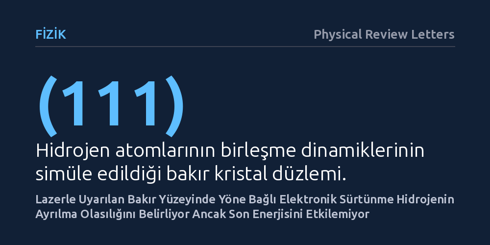

FIZIK · Physical Review Letters · 2026-10-25
Araştırmacılar, lazerle tetiklenen bakır yüzeyindeki hidrojen birleşmesinde yön bağımlı elektronik sürtünmenin tepkime dinamiklerine etkisini makine öğrenimi simülasyonlarıyla inceledi. Yöne bağlı sürtünmenin molekülün yüzeyden kopma olasılığını belirlediği, ancak molekülün nihai enerji dağılımlarını neredeyse hiç etkilemediği saptandı.
Lazerle tetiklenen yüzey tepkimelerinde elektronların yönlü sürtünmesinin tepkimenin gerçekleşme ihtimalini değiştirdiğini, ancak ortaya çıkan ürünün son enerjisinin yalnızca yüzeydeki enerji bariyeriyle şekillendiğini göstererek kimyasal süreçlerin kontrol sınırlarını netleştiriyor.

Metal yüzeylerde gerçekleşen kimyasal tepkimeler, endüstriyel katalizden temiz enerji üretimine kadar birçok alanın temelini oluşturur. Son yıllarda araştırmacılar, aşırı kısa lazer darbeleri kullanarak metallerdeki elektronları uyarıp kimyasal tepkimeleri yönlendirmenin yollarını arıyor. Normalde moleküller yüzeyde ısıl hareketle yavaşça tepkimeye girerken, femtosaniye süreli lazer darbeleri metaldeki elektronları aniden yüksek enerjili hale getirerek molekülleri alışılagelmişin dışında yollardan tepkimeye zorlayabiliyor.
Ancak bu süreçte kritik bir soru işareti bulunuyordu: Uyarılmış elektronlardan molekülün titreşimlerine aktarılan enerji, her yöne eşit mi dağılıyor yoksa yön seçici bir sürtünme mi uyguluyor? Eğer bu enerji aktarımı yöne bağlıysa (anizotropikse), lazer ışığıyla molekülleri belirli tepkime yollarına yönlendirmek ve ürünlerin enerjisini hassas şekilde kontrol etmek mümkün olabilir miydi?
Bu soruyu deneysel olarak tek tek atom ve elektron düzeyinde anlık izlemek günümüz teknolojisinde son derece güçtür. Araştırmacılar bu engeli aşmak için kuantum mekaniksel ilk ilkeler hesaplamalarını yüksek doğruluklu makine öğrenimi modelleriyle birleştiren yeni bir simülasyon çerçevesi geliştirdi. Bakırın en kararlı yüzeylerinden biri olan (111) kristal yüzeyi üzerinde iki hidrojen atomunun birleşerek molekül halinde yüzeyden ayrılma süreci bilgisayar ortamında modellendi.
Çalışmada iki farklı senaryo doğrudan kıyaslandı: Birincisinde elektronik sürtünmenin her yönde aynı etkiyi gösterdiği geleneksel izotropik model, ikincisinde ise yüzey geometrisine ve hareket yönüne göre değişen anizotropik model kullanıldı. Lazer darbesi sonrasında metaldeki uyarılmış elektronların hidrojen atomlarıyla nasıl etkileştiği binlerce moleküler dinamik yörüngesi hesaplanarak ayrıntılı biçimde analiz edildi.
Elde edilen bulgular, yöne bağlı elektronik sürtünmenin tepkimenin bazı aşamalarında belirleyici olduğunu, bazı aşamalarında ise beklenenin aksine etkisiz kaldığını ortaya koydu. Anizotropik sürtünme modeli, lazerden soğurulan enerjinin hidrojen atomlarına ne kadar hızlı aktarıldığını ve lazer yoğunluğuna bağlı olarak moleküllerin yüzeyden kopma olasılığını doğrudan değiştirdi. Yön bağımlı sürtünme hesaba katıldığında, hidrojen atomlarının yüzeyden ayrılma olasılığı lazer şiddetine çok daha hassas bir yanıt verdi.
Buna karşılık şaşırtıcı bir sonuç da elde edildi: Yüzeyden koparak serbest kalan hidrojen moleküllerinin öteleme, titreşim ve dönme enerjisi dağılımları, elektronik sürtünmenin yönünden neredeyse hiç etkilenmedi. Simülasyonlar, moleküllerin son enerji dağılımlarının elektronik uyarılmalardan ziyade, yüzeydeki kimyasal potansiyel bariyerinin şekli tarafından belirlendiğini gösterdi.
Bu sonuçlar, lazerle yüzey kimyasını yönlendirme çabalarında beklentilerin doğru ayarlanması gerektiğini gösteriyor. Lazer darbeleri ve yön bağımlı elektronik etkiler kullanılarak bir tepkimenin verimi ya da desorpsiyon olasılığı etkin biçimde artırılabilir. Ancak ortaya çıkan ürünlerin iç enerji durumlarını lazerle özel olarak şekillendirmek sanıldığı kadar kolay değil; çünkü molekül yüzeyi terk ederken nihai enerjisini büyük ölçüde yüzeyin kendi yapısal bariyeri belirliyor.
Çalışma aynı zamanda yüzey dinamiklerini modelleyen teorik yöntemler için önemli bir rehber sunuyor. Gelecekteki yüzey fotokimyası ve heterojen kataliz araştırmalarında, tepkime olasılıklarını doğru tahmin etmek için yöne bağlı sürtünme tensörlerinin modellenmesi şart görünürken, sadece ürün enerjilerini hesaplamak isteyen çalışmaların daha yalın potansiyel enerji modelleriyle güvenilir sonuçlar alabileceği anlaşılıyor.